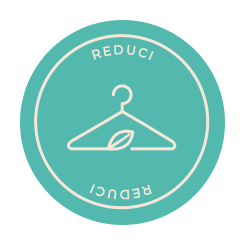
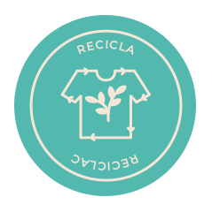
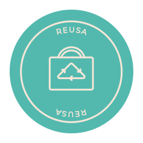
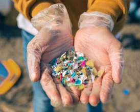
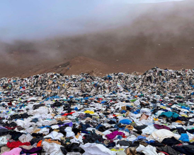

Quienes somos
Somos una fundación con fines sociales dedicada a informar y educar sobre la contaminación textil
Que hacemos
Ayudamos a reducir el impacto ambiental de la industria textil moderna




Modelos circulares y un diseño más inteligente para reducir el impacto ambiental de la industria textil

El desastre invisible que crea la ropa en el mar: un 80% de los microplásticos vienen de la industria textil.

El desierto tóxico que acumula toneladas de ropa usada en el norte de Chile.